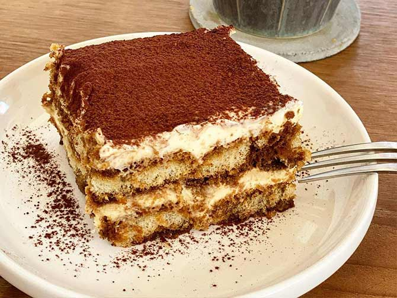

Tiramisu

Tiramisu de la mama
Le Tiramisu qui veux dire littéralement « tire-moi vers le haut », « remonte-moi le moral » est une pâtisserie et un dessert traditionnel de la cuisine italienne.
Fais a base de café et de mascarpone, nous allons voir aujourd'hui comment le faire a la maison
Les ingrédients pour réalisé ce dessert
- oeuf sans les blancs
- mascarpone
- sucre
- Café
- biscuit a trempé(boudoirs,biscuit à la cuillères
- cacao en poudre
La préparation
- Commencez par séparer le blanc des jaunes d’œufs.
- Dans un saladier, battez de façon vive le sucre en poudre avec les jaunes d’œuf jusqu’à ce que le mélange blanchisse. Privilégiez le sucre roux pour un tiramisu encore plus savoureux.
- tape importante : une fois bien mélangé, ajoutez le Mascarpone Galbani. Mélangez-bien jusqu’à obtenir une surface lisse. Réservez le mélange au frais.
- Montez les blancs en neige en les battants vivement à l’aide d’un fouet et incorporez-les délicatement avec une spatule à la préparation mascarpone et jaunes d’œufs réalisée lors de l’étape précédente de l’opération.
- Déposez la moitié des biscuits imbibés de café fort rapidement et éventuellement une cuillère d’Amaretto, sur le fond d’un plat pour constituer la première couche.
- Recouvrez les biscuits d’une couche de crème au mascarpone avec la moitié de la préparation.
- Disposez une deuxième et dernière couche de biscuits boudoirs imbibés de café.
- Recouvrez avec la dernière couche de crème mascarpone, soit la deuxième moitié de la préparation.
- Placez au réfrigérateur pendant 4 heures minimum (idéalement 24h), le temps qu’il prenne bien au froid.
- Avant de servir, saupoudrez le tiramisu de cacao amer ou de copeaux de chocolat
Magnifico